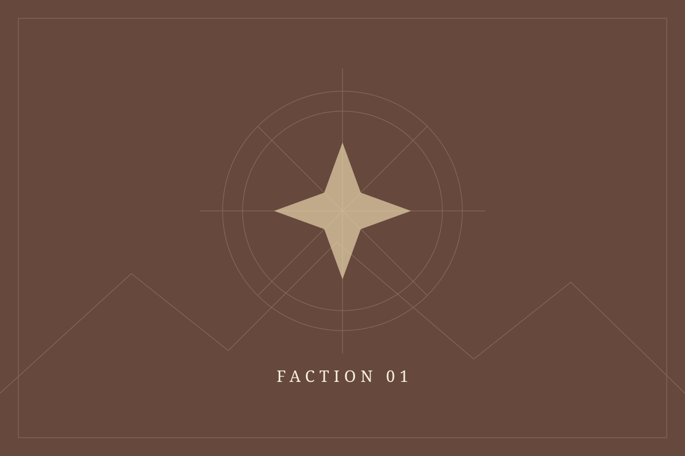
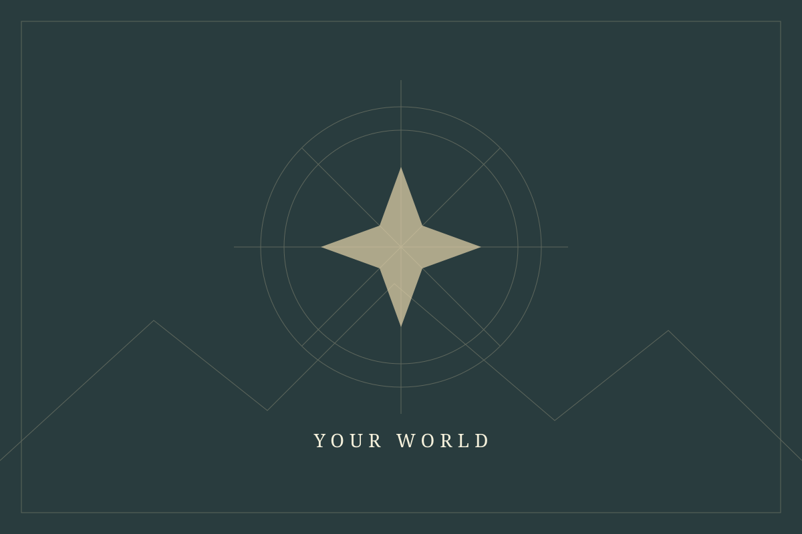
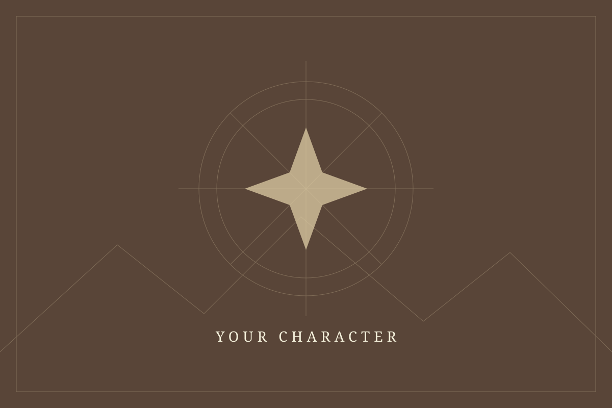
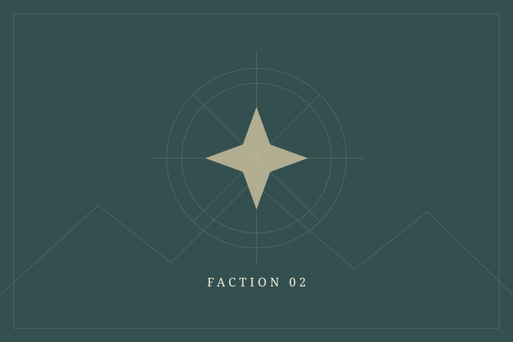
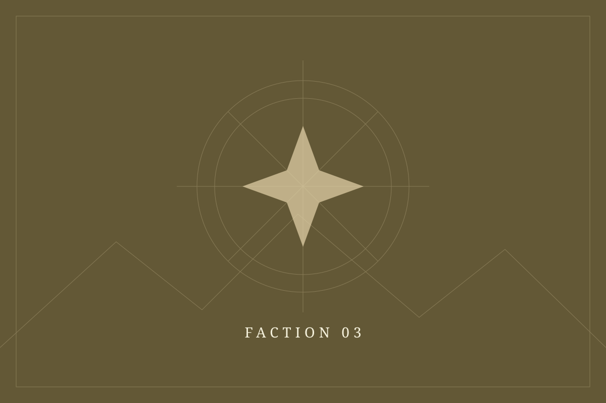
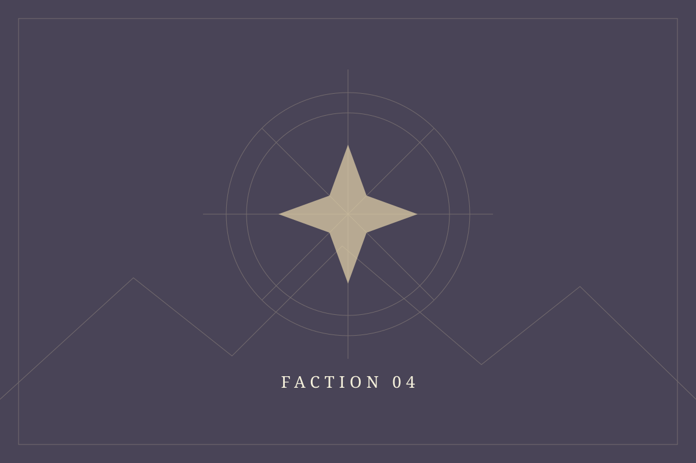

01 / A people
Faction name
Describe their homeland, beliefs, and place in the world. What do they want, and what stands in their way?

A new world begins here
Introduce your setting here. A forgotten age, an imagined future, or a history that never was. Set the scene, hint at the conflict, and invite your readers into the world you are building.

The premise
“Place a defining quote, prophecy, or passage from your world here.”
Describe the moment that shaped your setting. What changed? Who holds power? What is about to happen?
Use this space for a brief introduction to the history, themes, and stakes. Give visitors a reason to keep exploring.
People & powers
Introduce the cultures, houses, or movements that shape your world.

01 / A people
Describe their homeland, beliefs, and place in the world. What do they want, and what stands in their way?

02 / A power
Introduce a rival realm or an uneasy ally. Give readers a glimpse of its customs and ambitions.

03 / A movement
Who challenges the established order? Share the ideals that hold this group together.

04 / A mystery
Introduce a distant culture, a forgotten order, or a people whose story has yet to unfold.
The atlas
An unclaimed Earth. Add your own borders, settlements, and stories.
Loading the atlas…
No locations or territories have been added yet.
Beyond the map
Introduce your fiction, lore articles, or campaign journals. Add links when they are ready to share.
A place for a film, game, development diary, or trailer set in your world.
Point readers toward the deeper history, characters, and details of your setting.
Keep the story going
Introduce yourself or your team. Tell visitors how they can follow your work, contribute to the world, or join your community.
Your community links and contact details go here.
{kind=link}
{kind=link}
{kind=link}